Building a custom mechanical keyboard from scratch
 In this article I describe how I constructed an 11x5 uniform ortholinear
mechanical keyboard
from scratch. By "from scratch" I mean that I used only off-the-shelf
parts although, to be fair, some of these parts are rather specialized.
An ortholinear keyboard has the key switches in a regular, rectangular
grid, rather than being staggered, as is more usual. By "uniform" I
mean that all the keys are the same size, even the space bar. Although
such a keyboard takes a bit of getting used to, it allows me to
pack 55 keys into a keyboard the size and shape of an A5 paper sheet.
In this article I describe how I constructed an 11x5 uniform ortholinear
mechanical keyboard
from scratch. By "from scratch" I mean that I used only off-the-shelf
parts although, to be fair, some of these parts are rather specialized.
An ortholinear keyboard has the key switches in a regular, rectangular
grid, rather than being staggered, as is more usual. By "uniform" I
mean that all the keys are the same size, even the space bar. Although
such a keyboard takes a bit of getting used to, it allows me to
pack 55 keys into a keyboard the size and shape of an A5 paper sheet.
I should point out that I'm not presenting this as an example of optimal design or construction -- rather, I hope to help other people to avoid the mistakes I made and the frustrations I experienced.
Although there are many published designs for small keyboards, and a number of commercial products, it turns out that 11x5 is an unusual size, whatever the layout. I wanted a keyboard this size because it is a good fit for a number of small computers I've built. With conventional key spacing of 3/4", my keyboard is almost exactly the same size as a 7" screen.
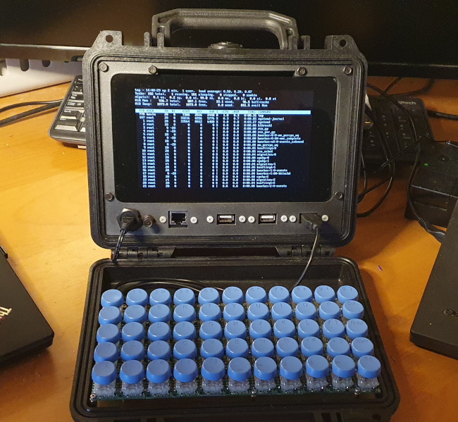
As to why a mechanical keyboard -- this is really the only way to build a completely custom keyboard without mass-production.
In this article I described the principles of keyboard scanning, and how to program a SparkFun Pro Micro microcontroller to scan a keyboard and output USB codes to a host computer. The 11x5 keyboard uses exactly the same principles, and almost the same software.
Note:
If you actually want a mechanical keyboard for routine, day-to-day use, or for gaming, read no further. There are many commercial products and well-documented kits. This article is about building a keyboard to fit a highly specific requirement, when no ready-made plans or kits are available. The process is time-consuming, tedious, frustrating, and quite expensive.
In this article, which is intended for people with little or no experience of mechanical keyboard design, I'm only dealing with the construction of the keyboard -- the key-switch matrix itself, and the controller board. General principles and programming I covered in my previous article. The software is available from my GitHub repository, although I would expect that anybody who built such a keyboard would want to change the layout to suit his or her preferences.
To build a keyboard the way I describe, should you want to, you will need:
A heap of key switches
At least the same number of key switch breakout boards (see below)
A SparkFun Pro Micro microcontroller
A few feet of hookup wire
Some small-signal diodes -- one for each row or column, depending on your controller design
Glue -- the stronger the better
Various stand-off pillars, nuts, bolts, and washers
A small piece of stripboard, and the modest electronic engineering skills to assemble a simple circuit on it
Suitable key-caps -- these are likely to be the most difficult component to obtain, if you're layout is unconventional
About mechanical keyboards
Most computer keyboards are mechanical, in that they have moving parts. When we talk about a "mechanical keyboard", we're generally referring to a keyboard that is made up of many individual mechanical switches. Most commercial keyboards, even top-quality ones, use contact membranes -- two grids of electrical conductors closely separated, such that mechanical pressure causes the conductors to come into contact. There is usually some sort of rubber sheet that provides the upwards pressure on the key switches. A keyboard of this sort is an assembly -- you couldn't take the switches out.
Mechanical keyboards have had a revival in the last few years. I suspect that's largely because they provide the very rapid action that computer gamers like. It's also possible to make a very specific, one-off design -- something that is probably impossible with a membrane keyboard.
Key switches
The heart of a mechanical keyboard is its switches. There are a number of manufacturers of which Cherry is probably the best known. Increasingly, though, Gateron switches are becoming popular. The Cherry MX switch range has been widely copied, and most other switches are broadly compatible -- that is, they have the same size and pinout.
Both Cherry and Gateron switches have models identified by colour -- "brown", "red", etc. These different models have different pressure profiles, different sounds, and so on. These subtle differences are important to keyboard enthusiasts, and there is endless discussion about the relative merits of each. I'm using Cherry MX "brown", because I found some for sale second-hand on eBay. I don't own a gold mine, and good-quality switches are eye-wateringly expensive if you buy them new.
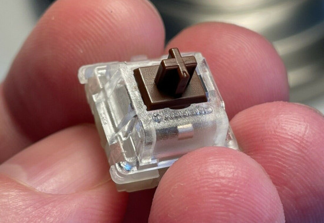
Note that the moving part of the switch is, indeed, of the appropriate colour, so the different models are easily identified.
Another factor of importance to construction is whether the key switches are to be "PCB mounted" or "plate mounted" -- see below for more information. This is an significant decision, because different switches are available for these different construction techniques.
General construction
Most mechanical keyboards fall into one of two general constructions, depending of whether the main support for the switches is provided by a keyboard plate or a PCB.
Almost all keyboards with more than about 48 keys -- and even some smaller ones -- use plate construction. In this design, the key switches are mounted on, and supported by, a metal or rigid plastic plate, into which rectangular holes are punched or cut. The holes are just large enough for the body of the keyswitch to fit into and, when they are inserted, they should snap into place.
When the switches are plate-mounted, the design of the underlying PC becomes a bit less critical -- it is the plate that orients and spaces the switches.
PCB-mounting uses a PCB both to provide electrical connections, and also to support and orient the switches. The PCB must be made with very close tolerances, and probably be thicker and heavier than a PCB that is not providing mechanical support.
Plate-mounting and PCB-mounting require slightly different switches, as shown in the photo below.
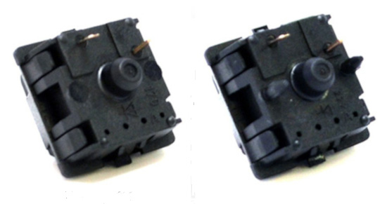
The switch on the right has additional lugs that engage with holes in the PCB. These lugs align the switches by preventing rotation. A switch with a single, central lug (left) will fit in the same PCB, but it will be very difficult to get the switches lined up properly.
You'll see these two types of switch referred to as "3 pin" and "5 pin" although, of course, there are only two electrical contacts.
A feature of most larger keyboards is stabilizers. These mount on the plate or PCB, and allow a large key-cap (like a space bar) to operate a single key switch. My design uses keys that are all the same size, and does not require stabilisers.
A self-contained keyboard will need to accommodate a controller board. In large keyboards, there's usually room to build the controller into an unused part of the main PCB, or perhaps mount it on the underside. However, my keyboard is small, and doesn't use a custom PCB, so neither approach is an option. Instead, I'm mounting the controller on a small board that is fastened to the underside of the main PCB (see below).
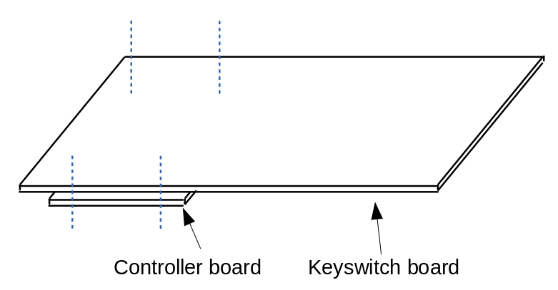
This method of construction does add about 10mm to the overall height of the keyboard, which won't suit all applications. It's necessary to give some thought to where the USB cable will be routed out of the keyboard -- more on this later.
Backlighting
It's increasingly common for keyboards to be lit from the underside with LEDs. Usually there will be an LED under each key-cap. My applications are all battery-powered, and I don't want to waste energy lighting 55 individual LEDs. Lighting does add to the complexity of the wiring, particularly if you want to be able to switch individual LEDS. Some key-switches have LEDs built-in. Alternatively, you can put the legs of a 3mm LED through an opening in the body of the key switch, so the LED sits just below the key-cap. Each LED will need its own current-limiting resistor, which adds to the weight and construction complexity of the keyboard. Still, there's no doubt that back-lighting makes it easier to type in the dark.
The use of backlighting requires specific key-caps. For better or worse, backlighting is so popular that it's now difficult to get key-caps that are suitable for non-backlit keyboards.
Key-caps
You wouldn't think there was all that much to say about key-caps. In practice, though, custom keyboard design is frustrated by the fact that key-caps on full-size keyboards have a particular profile. That is, each row of keys has caps of a slightly different shape. In general, the conventional middle row (the one containing the ASDF.. keys) has the lowest profile, while the other rows have caps that slope away from this lowest point. The difference is subtle when you look at key-caps in a bag, but very noticeable when you mount the key-caps next to one another on a keyboard. Mounting a key intended for the top row in the middle row looks decidedly odd, and makes the keyboard hard to use.
I'm making a 55-key keyboard and, so far as I know, there is no "55-key profile". The best I can do is to get key-caps that are of completely uniform shape. Problem is... these are not widely available (not in the UK at least). The only suitable caps I've found that are widely available in the UK are circular. By their very nature they are flat on top. I have some specialist square caps on order, but I have no idea when I'll get them. At the time of writing, Brexit and coronavirus have combined to make it rather difficult to import anything from overseas except medical supplies (and quite right too, of course).
If you aren't using backlighting, then ideally you'll need to get non-backlit key-caps. If you can -- but you probably can't. I made an absurd mistake with the first set of key-caps I bought -- I thought I could relabel the caps by sandpapering the existing label off, and applying a new one. However, no matter how hard I sanded the key-cap, the original legend remained clear. It took about an hour or fruitless sanding, before I realized that the legend went all the way through the key-cap, like the lettering in a stick of Brighton rock. This, of course, is how backlighting works -- the key-caps have transparent legends set into opaque backgrounds, and the light shines through to show the symbol. These key-caps don't work very well without backlighting.
I don't really know a ready-made solution to this problem, other than to install backlighting, or live with somewhat dim key legends. This latter wouldn't be such a problem with a conventional layout, because experienced operators instinctively know where the keys are. With an unconventional layout, though, the poor legend visibility is more of a nuisance.
To make things worse, you won't find key-caps -- unless you have them made -- to suit a uniform keyboard. That is, you won't find commercially-available key-caps with a "space" key the same size as a letter symbol. This lack of key-caps has actually turned out to be the biggest problem in my construction, and it's one I still haven't fully solved.
Construction
So much for the principles. Here's how I constructed the keyboard, with all my mistakes left in. My design used PCB-mounted switches, because I didn't want the time and expensive of designing a custom key-switch plate and getting it laser-cut. I figured that, with a keyboard this small, a PCB would provide enough rigidity. In practice, the PCB has to be supported from the underside at multiple points to make at rigid enough for effective typing. Moreover, the lack of a support plate makes getting all the switches properly aligned on the PCB a bit of a trial.
PCB
I did toy with having a custom PCB made to my design and there's no doubt that, if I were building this keyboard again, I would. However, custom PCB fabrication is either difficult and time-consuming -- if you do it yourself -- or expensive if you don't.
Getting a simple, double-sided PCB made is not normally all that expensive, and a keyboard doesn't call for anything more complicated than that. What is complicated, however, is the drilling. In a PCB-mounted design each key switch will need five holes, of three different sizes, and they need to be placed with high precision. Even with a plate-mounted design you'll need three holes of two different sizes.
However, the approach I adopted was both expensive and difficult and time-consuming -- the worst of both worlds.
For a one-off design, you might think you could build your key matrix on stripboard -- after all, stripboard is available in large enough pieces. Unfortunately, the Cherry MX layout has pins that are not on a 0.1" pitch, and I don't think anybody makes stripboard in the 0.05" pitch the switches use.
So, in the end, I built my PCB from a grid of SparkFun MX breakout boards. These boards (see photo below) are designed to accept MX-compatible switches (with three or five pins, but really you need five), and put new contacts on a 0.1" grid. You can then mount them on stripboard or, as I did, just solder the pins directly from one breakout to the next. These breakouts cost about 50p-60p each in the UK when purchased in quantity (but be careful -- I've seen them advertised for silly prices). This is quite expensive when used in a simple design like mine, but these breakout boards have sophisticated features that I'm not using, like provision for a diode in series with each switch.
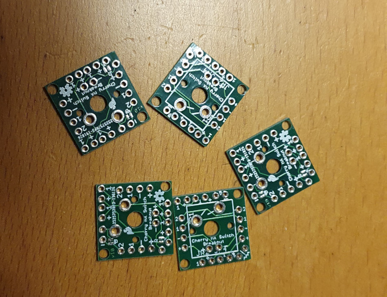
Assembling the breakouts is easy, because my key layout is perfectly rectangular. However, the breakout design does allow for staggered layouts -- see the connection guide on the Sparkfun website.
I made my grid of breakouts into a single "PCB" by the simple expedient of super-gluing them all together. The photo below shows the start of this process. This needs to be done on a perfectly flat surface, and you need to take extreme care when applying the glue, else it will ooze out and stick the breakouts to your work surface.
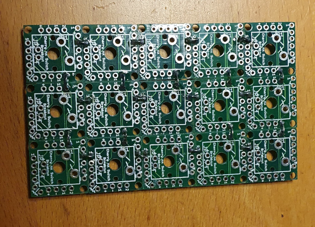
Once the grid is in place, we need to solder the electrical contacts to form a row and column matrix. The contacts can be soldered either on the top or the bottom of the PCB assembly, until the switches are mounted, at which point you can only solder on the bottom. The SparkFun website laconically remarks:
"There’s not an easy method to soldering boards together."
and they're not kidding. Forming the key matrix required cutting and soldering several hundred tiny pieces of wire. Incidentally, using heavy-gauge wire does provide a bit of additional mechanical support, so that all the downward key pressure is not carried by the glue joints.
Don't be tempted to do what I did -- starting to solder up the breakouts and add switches before you have a full grid.
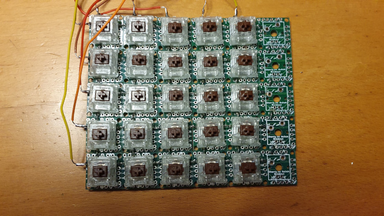
Whilst it's nice to see things coming together, once the breakouts are wired up it's very difficult to glue the remaining breakouts and keep everything flat.
One last point about the breakouts -- I found that they are not perfectly regular. Some had tiny protrusions on the edges, as if they'd been snapped off a perforated sheet (maybe that is how they're made). Although tiny, these protrusions prevent the breakouts butting together to form a perfect rectangle. If I were doing this again, I'd certainly spend some time with a file or sandpaper before gluing the breakouts together.
I wondered -- and continue to wonder -- whether there might be an alternative to gluing the breakouts. Probably you could solder headers to each breakout, and then solder everything to a large piece of stripboard. My concern here, though, is that I'd be unable to get access to the bottoms of the breakouts, so I'd have to be absolutely certain that I'd wired everything perfectly up top. I really have don't that much confidence in my soldering. There's nothing on SparkFun's website that sheds any light on how to assemble the breakouts into a full-size keyboard, and I still can't think of any better way than gluing them. But maybe I'm just missing something.
Circuit design
The circuit design is trivially simple -- the keyboard matrix is connected to the input and output pins of a SparkFun Pro Micro via a set of diodes. The diodes are necessary to prevent current flowing out of one output and into another when multiple keys are pressed.
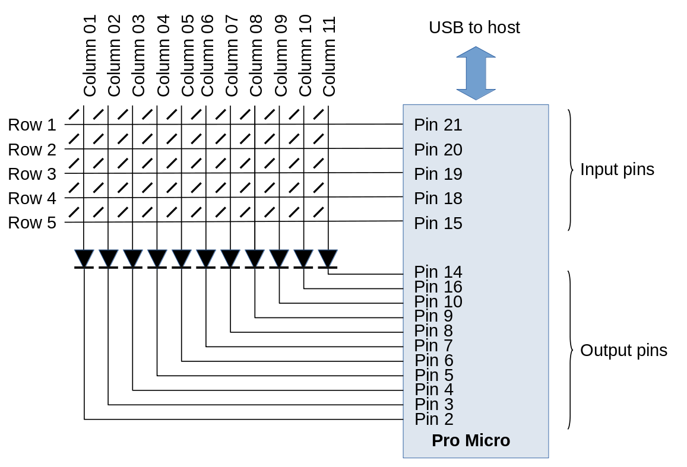
It would be simple enough to make a PCB for the controller circuit but, in fact, it's easy to assemble it on a small piece of stripboard.
Initial testing
Having figured out the controller design, the keyboard matrix can be tested on breadboard. At this stage -- provided you've flashed the Pro Micro with suitable software -- you should have a workable keyboard, even without key-caps.
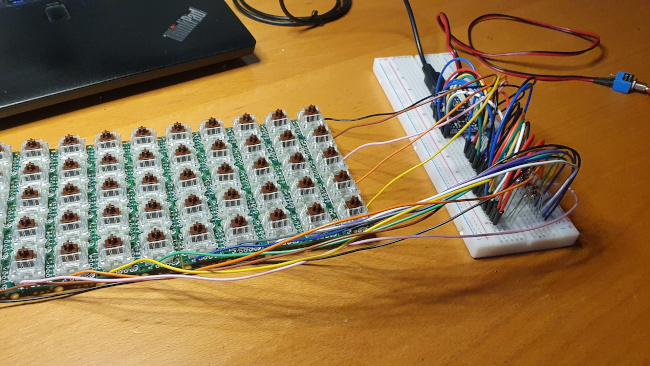
Connecting the controller
The photo below shows the fully-assembled PCB, with dupont connectors for connecting it to the controller board. I shortened and tidied this wiring for the final version but, at this stage, I wasn't entirely sure where the connections were going to be on the controller board.
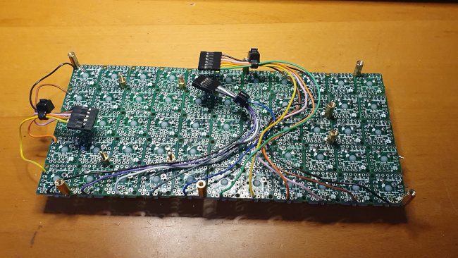
The controller board stands off the keyboard PC using four short PCB pillars. I made the mistake of using metal pillars, which neatly shorted tracks on the stripboard. I had an hour of frustrated head-scratching, trying to work out why there was a short-circuit that disappeared every time I dismantled the unit for testing. D'oh!
The position of the microcontroller on the controller board is dictated by the placement of the USB port. Because the keyboard will be used in a confined space, the USB port had to be positioned such that the "stiff" part of the USB cable -- the part near the plug -- was under the keyboard. This allows the cable to be routed without putting strain on the USB socket, which is only lightly soldered to the Pro Micro board. However, if the USB port is too far from the back of the keyboard, it will be impossible to insert the USB cable without dismantling the keyboard. It's a little fiddly, anyway.
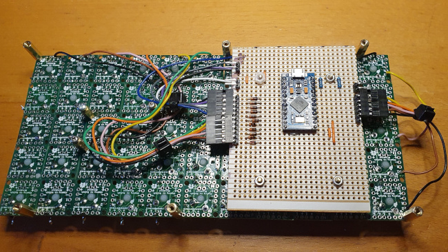
Finishing up
The last step is to install the key-caps. This is easy, because they are designed to push-fit onto the switches. A key-cap puller is an inexpensive, but crucial, tool for situations where you put the key-caps in the wrong place, or upside down.
As I said before, I'm not entirely happy with the key-caps. When I receive them, I will be fitting rectangular, uniform-profile caps, which will arrive blank so that I can install my own symbols.
Future work
This keyboard was never intended to be a self-contained unit, but to be built into a piece of equipment. So I don't need any kind of case. However, a free-standing keyboard would need a case -- this could be perspex, thin plywood, or anything else that can be cut to size.
If I were building many of these keyboards, I'd certainly make the investment in a custom PCB, and a laser-cut keyboard plate. Setting these things up would take take but, with hindsight, probably no more time than assembling 55 individual key switch breakout boards into a keyboard.